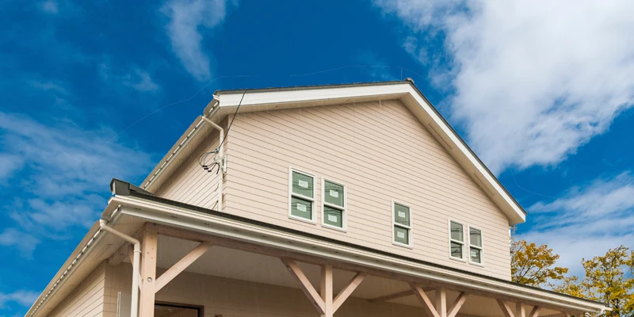
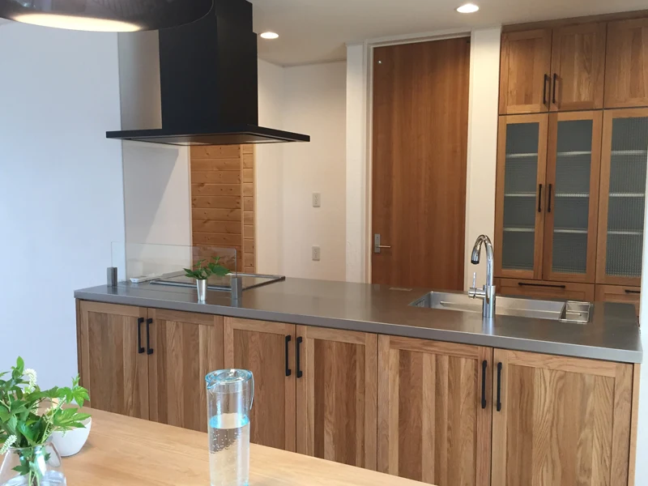
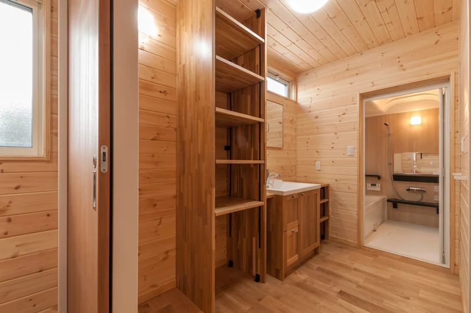
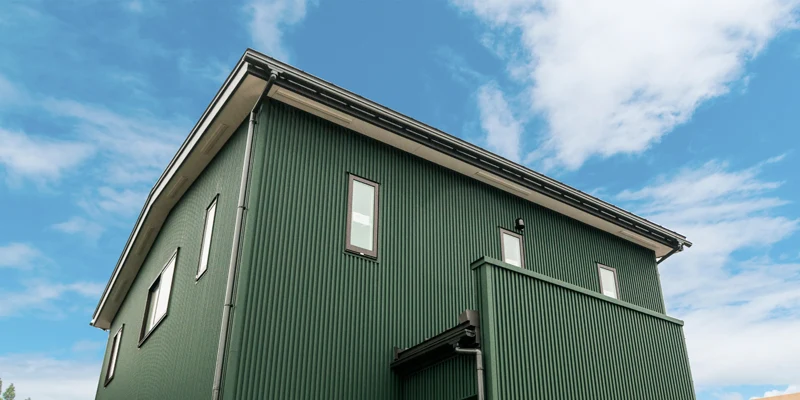
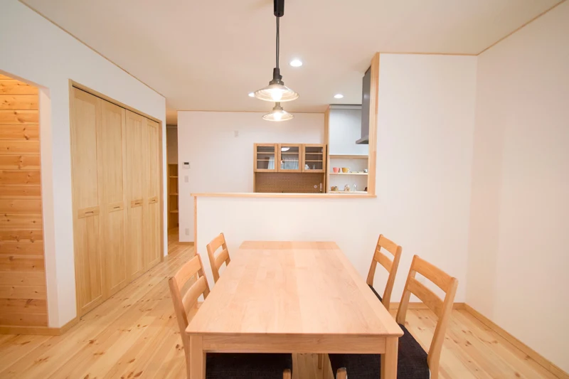
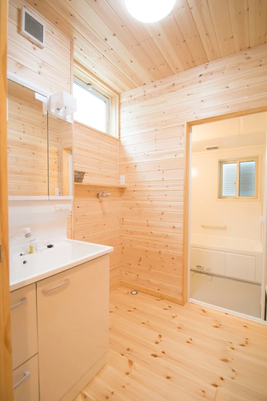

イベント情報
【富山の新築 おうち見学会】2棟同時開催〜こどもにやさしい自然素材の家〜
詳しいご案内
日程・価格・募集内容などは、掲載当時の情報です。
[こどもの成長を考えた 自然素材の家]
新築完成見学会 2棟同時公開！！
家族にとって快適で安全な暮らしの空間、「身体に良い自然素材を使った家を建てたい」というオーナー様のご要望から、こどもの成長を一番に考えた、自然素材の健康住宅が完成しました。
2棟同時公開いたします！
みなさんの家づくりの参考にご家族そろってご来場ください。
【富山市蓮町】
『呼吸する自然素材しっくい壁を使った、
家族の健康を考えたお家』
[ご家族構成] 夫婦 ＋ 赤ちゃん

＜見どころポイント！＞
・呼吸する自然素材しっくい壁を使った家族の健康を考えたお家。
・マリンランプが、海辺のビーチハウスのような開放的な空間を演出。

※写真はイメージです。

※写真はイメージです。
【富山市松若町】
『子供の成長を考えて、乾燥や湿気を防ぐ
しっくい壁のお家』
[ご家族構成] 夫婦 ＋ 子供2人

＜見どころポイント！＞
・子供の成長を考えて、乾燥や湿気を防ぐしっくい壁、自然素材を使ったお家。
・部屋は、パイン材の自然の木肌の味わいをそのまま生かしたナチュラルデザイン。
・外観はシャープな感じで、耐久性が高く、メンテナンスフリーな素材として
注目を集めている、ガルバリウム鋼板外壁家。

※写真はイメージです。

※写真はイメージです。
開催概要
- 開催日時
- 12月14日（土）、15日（日）10:00〜17:00
- 開催場所
- 富山市連町／松若町の2会場
※詳しい住所はご予約いただいた際にお知らせいたします。
※両会場は近くです。